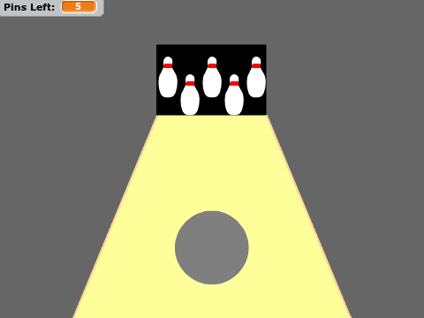
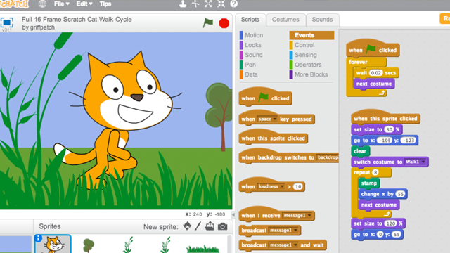

This fun programe is all about coding games - and the awesomeness that comes from it! From Frogger to Tron or even classics like Breakout or Flappy Bird, our Code Coaches will help choose the right game(s) for our students. Students will not only create a real functioning game from scratch, they'll practice the fundamental coding concepts required in any language, learn how to think logically, and have fun while doing it. Using Scratch, MIT's popular drag-and-drop programming language, students will code cool playable games with guidance from our seasoned Code Coaches, and have a sweet Friday afternoon demo for parents to see! Because we do all our coding online, students can log into their account at any time during or after the course to show off what they've done, and even keep adding to their game!
COURSE DESCRIPTION

Scratch is the most widely used teaching tool for kids today. Kudos to the folks at MIT who created it, Scratch is great because it's so graphical and easy to start with, but can support even the most complex logic that professionals use. Think your little students "knows Scratch" already? They don't! That's the beauty of what we teach - it's not the language (the "syntax") that matters , it's the practice of thinking through a problem and applying a solution (the "logic") that's critical to ANY coding language - and any future career, for that matter! Some locations may choose to use Snap! instead, a similar language created by Berkeley (that they even use to teach Berkeley college freshman!). You can find out more about Scratch at http://scratch.mit.edu and Snap! at http://snap.berkeley.edu.
TEACHING PLATFORM

CONCEPTS LEARNED
What will students learn? Lots of cool stuff! Our programe focus on coding apps from scratch. We're not just relying on a platform to change parameters in a game, we're actually doing sequential coding through logical steps. Students will gain general skills like problem solving, teamwork, code debugging, and perhaps most importantly, all students will learn and practice the logical thinking skills required to program a computer at any level! In addition students will gain and practice important coding concepts that may include:
Variables, Loops, and If/Then Logic
Cartesian Coordinates and Sprite Movement
Event Detection
Score Keeping and Game Design
Simple Math Logic
and More!
Kids with very little or no coding background can join us for this beginner's programming course. And, because we have a number of games up our sleeves, even the more advanced elementary school coders can learn and have fun in our programe by coding more complex games. If your students is a regular Coder School student however, be sure to check with us first, as sometimes this material is covered in more detail in our regular after-school Coaching sessions.